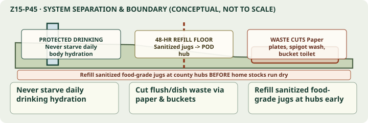

Z15-P45 · Disaster scenarios · New manuscript
Ration potable water and use community distribution hubs during extended water cuts
Stretch household drinking water safely during multi-week water outages without inducing dehydration or sanitation breakdown.
When it applies · Multi-day to multi-week municipal water-plant failures, main collapses, or rural well/power outages.
Equipment · Sanitized food-grade jugs for agency bulk-water pickup, written daily water-ration log, spigot handwashing station, and bucket sanitation.

Actions
- NEVER ration drinking water below basic physiological hydration—drink what your body needs today while slashing non-drinking waste dramatically (use disposable plates, thin-stream spigot handwashing, alcohol hand rub when clean, and emergency bucket toilets instead of 1.6-gallon toilet flushes).[W14, U13, M17]
- Monitor county radio/211 for official municipal bulk-water tanker or bottled-water distribution sites, bringing clean, sanitized, clearly labeled DRINKING WATER food-grade containers (never dirty utility buckets or old chemical jugs) to refill early before home stocks run dry.[W06, W13, D18]
- Track household drinking-water gallons remaining every evening so you trigger distribution pickups, safe validated treatment, or relocation with at least 48 hours of buffer left.[W14, D18]
Failure recognition · Forcing family members to skip drinking water to save gallons for flushing toilets, causing severe dehydration and urinary/heat illness.[M17, U13]
Verify · Confirm drinking hydration prioritized first, non-potable flushing cut via bucket sanitation, and clean food-grade jugs ready for hub refills.[W14, U13, W13]
Stop or change course · Dropping below a 48-hour drinking-water buffer without confirmed safe resupply or validated treatment triggers immediate relocation to serviced areas.[W14, U17]
Evidence and editorial notes
- D18 · FEMA / Ready.gov · Drought (current web edition)
- Section: Extended 30-Day Resilience, Supply Pacing, and Mutual Aid · Conditions: Multi-week regional disruption, supply-chain interruption, or prolonged utility recovery
Support: Manage 30-day household resilience through structured inventory tracking, conservative water/fuel/battery rationing, scheduled sanitation and hygiene routines, daily neighborhood wellness checks, and early transition to community distribution hubs before critical reserves run dry.
Limitations: Self-reliance plans must remain integrated with municipal/county relief and medical care—isolation without community check-ins increases mortality during prolonged disasters. · Conflicting evidence: None; frames 30-day scenarios realistically without doom-isolationism.
Editorial note: Anchors Z15 30-day operations, rationing logs, and community mutual-aid cards. · Specialist reviewer: Emergency management and community resilience
Primary source · checked 2026-11-24 - M17 · NIH / MedlinePlus · Dehydration (current web edition)
- Section: Dehydration Recognition, Oral Rehydration, and Red Flags · Conditions: Heat exertion, prolonged diarrhea, vomiting, or inadequate water intake
Support: Encourage small frequent sips of safe potable water or labeled oral rehydration solution in alert patients able to swallow; evacuate urgently for confusion, inability to keep fluids down, sunken eyes, or minimal dark urine.
Limitations: Severely dehydrated or altered patients cannot safely rehydrate by mouth alone. · Conflicting evidence: None; avoids unverified homemade salt-sugar ratio guesswork when labeled packets exist.
Editorial note: Links hydration monitoring to medical evacuation triggers. · Specialist reviewer: Wilderness medicine and internal medicine
Primary source · checked 2026-11-24 - U13 · CDC · How to Make Water Safe in an Emergency (2024-09-19)
- Section: Sanitation, Hand Hygiene, and Emergency Waste Containment · Conditions: Household water-service or sewer interruption
Support: Maintain separate handwashing stations using safe water and soap (or alcohol hand rub when hands are not visibly soiled), line emergency bucket toilets with heavy bags and tight lids when sewer service is unusable, and never mix bleach with ammonia or acids.
Limitations: Improvised sanitation is a temporary containment bridge until municipal sewer or licensed sanitation resumes; follow local health department disposal orders. · Conflicting evidence: None; prevents fecal-oral outbreaks and toxic chloramine gas mixing.
Editorial note: Core household sanitation and chemical-mixing boundary in Z13. · Specialist reviewer: Environmental health and sanitation specialist
Primary source · checked 2026-11-24
Current assessment · A04-U13 (2026-11-25) · Open: support partial or missing (A04): The original water section cannot qualify bucket toilets or all chemical conditions. Water/hygiene and sanitation/chemical controls need partial separation and local sanitation review. Limits: Specialist review PENDING (Environmental health and sanitation specialist); publication HOLD. All release decisions pending.
Current assessment · W2C-E035 (2026-11-28) · Narrowed: later guidance limits this claim: Alcohol rub is a fallback only when soap and water are unavailable; it does not replace handwashing after toilet, diaper or vomit tasks or before food. Limits: The baseline U13 text is kept for history; cards now cite U26 and U27 for the hand-hygiene boundary. - U17 · FEMA / Ready.gov · Evacuation (current web edition)
- Section: Household Evacuation Thresholds When Utilities Fail · Conditions: Uninhabitable indoor temperatures, sewage backup, persistent CO alarm, or structural/utility hazard
Support: Establish clear pre-agreed exit triggers to relocate to a warming center, hotel, or relatives BEFORE indoor freezing, carbon monoxide alarms, medical-device battery exhaustion, or impassable blizzard roads trap occupants.
Limitations: Waiting until indoor pipes burst or batteries hit zero removes safe travel options. · Conflicting evidence: None; aligns with T13 and E14.
Editorial note: Defines objective household abandonment thresholds in Z13. · Specialist reviewer: Emergency management and cold-weather operations
Primary source · checked 2026-11-24 - W06 · CDC · How to Create an Emergency Water Supply (current web edition)
- Section: How to store emergency water; Safe storage containers · Conditions: Potable water intended for emergency storage
Support: Prefer sealed commercial water or clean food-grade tight-closing containers. Avoid containers that held toxic chemicals.
Limitations: Container shelf durability and rotation depend on plastic/material type and storage heat. · Conflicting evidence: None; reinforces strict raw-vs-clean segregation.
Editorial note: Used to enforce labeling and dedicated raw/potable vessel separation. · Specialist reviewer: Drinking-water safety and public health
Primary source · checked 2026-11-24 - W13 · CDC · How to Create an Emergency Water Supply (current web edition)
- Section: Cleaning and sanitizing a water storage container before use · Conditions: Reusable food-grade water storage containers before filling with potable water
Support: Wash with dish soap and warm water, sanitize interior surfaces with a labeled dilute bleach solution for at least 30 seconds, and rinse with safe water before filling.
Limitations: Damaged, cracked, or chemical-contaminated containers cannot be rehabilitated by washing. · Conflicting evidence: None; complements CDC-S container rules.
Editorial note: Separates routine washing from sanitizing and air-drying/rinsing. · Specialist reviewer: Drinking-water safety and public health
Primary source · checked 2026-11-24
Current assessment · W2C-E045 (2026-11-28) · Partial: part of this claim is not on the cited page: The page supports soap washing, a 1 teaspoon per quart bleach solution and at least 30 seconds of contact, but directs air-drying; it has no rinse after sanitizing. Limits: Z04-P45 now cites W35 and no longer tells readers to rinse after sanitizing. - W14 · CDC · How to Create an Emergency Water Supply (current web edition)
- Section: How Much Water to Store; Rotation · Conditions: Household emergency water reserve planning
Support: Plan at least 1 gallon per person per day for at least 3 days (more for heat, illness, pregnancy, or pets); rotate self-filled water every 6 months.
Limitations: Backcountry active travel demands vary sharply by exertion, temperature, and humidity. · Conflicting evidence: None; household baseline is cited only as a planning floor, not a physiological maximum.
Editorial note: Distinguishes household storage floors from active field hydration demands. · Specialist reviewer: Household preparedness and drinking-water safety
Primary source · checked 2026-11-24
Source lineage · CDC Emergency Water Supply and Ready.gov Water; new manuscript · Classification · New manuscript.